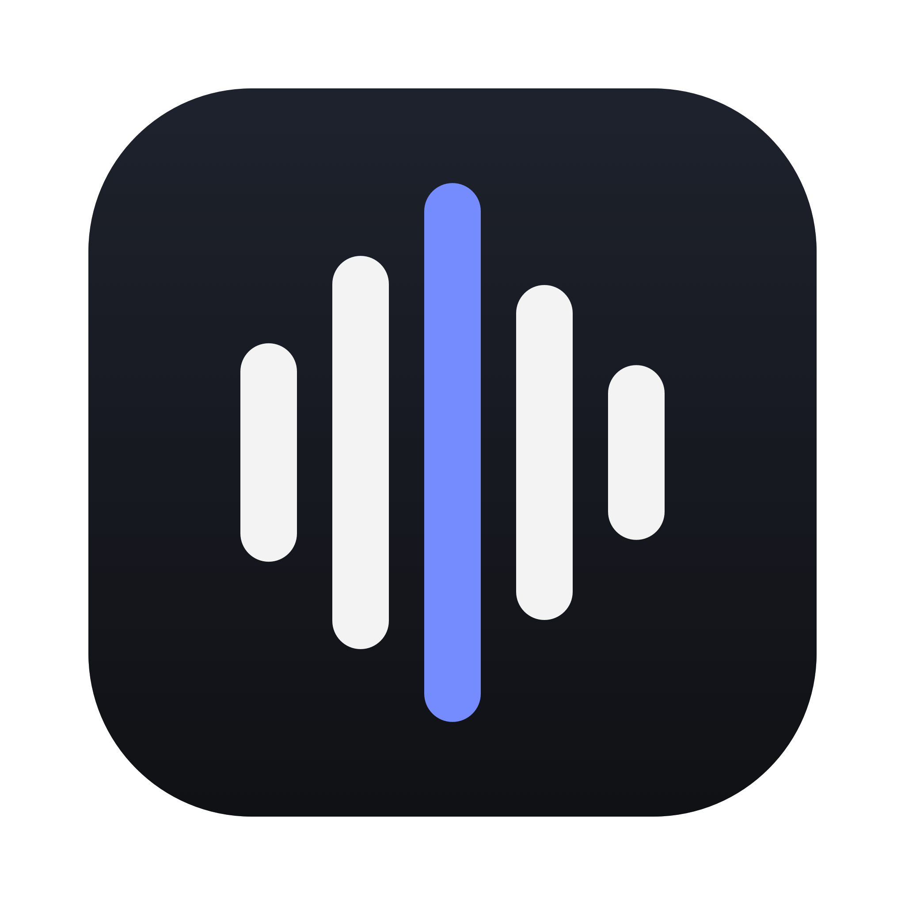

Labia convierte lo que dices en texto donde está tu cursor, en español y con tu spanglish, en macOS, Linux y Windows. Cada propuesta cuenta esa idea de una forma distinta y trae su versión para la barra de menú y la bandeja, donde el ícono vive a 16 px.

«Tener labia»: hablar bonito y convencer.
El nombre viene de labios y de tener labia. Las barras de la voz siguen la silueta de unos labios: arriba el arco de cupido, a los lados las comisuras y abajo el labio lleno. Se lee al mismo tiempo como voz y como boca, y nadie más en dictado lo usa.
En movimiento, las barras se abren y se cierran como si hablaran: sirve para la pantalla de bienvenida y para el ícono mientras graba.
Lo dices y aparece donde está el cursor.
Un globo de diálogo con la voz adentro, y la voz termina en el cursor de texto. Cuenta en un solo vistazo lo que hace Labia: lo que hablas se escribe en la app donde estás, sea la terminal, el navegador o un chat con una IA.
El cursor parpadea igual que en un editor, y el verde lima sobre violeta se ve desde lejos en el dock, la barra de tareas y el launcher de Linux.
La virgulilla de la ñ es una onda de sonido.
La tilde de la ñ es la marca más nuestra del español, y su forma es literalmente una onda. Aquí flota sobre la L de Labia como si fuera la voz: una letra que sólo existe en español, hecha con lo que dices.
Es un monograma, así que funciona igual de bien como ícono de app, favicon, avatar de GitHub o sello en el README.
| Propuesta | Fuerte en | Cuidado con |
|---|---|---|
| 1 · Labios de onda | Recordable: el nombre y el dibujo cuentan lo mismo. Colores que nadie más usa en dictado. Se anima de forma natural. | A tamaño chico pierde las barras y queda sólo la boca. |
| 2 · Dicho y escritoELEGIDO | Explica la función sin palabras. El contraste más fuerte de los tres. | Los globos de diálogo son comunes en apps de chat. |
| 3 · La tilde que habla | Identidad en español. El más legible en la barra de menú. | Habla de idioma más que de voz: hay que verlo junto al nombre. |
Los archivos de cada logo están en propuesta/img/: el ícono de app (concepto-N-*.svg), su versión para 32 px y menos cuando la necesita (-chico.svg) y el glifo de un color para la barra de menú y la bandeja (-glifo.svg, usa currentColor).